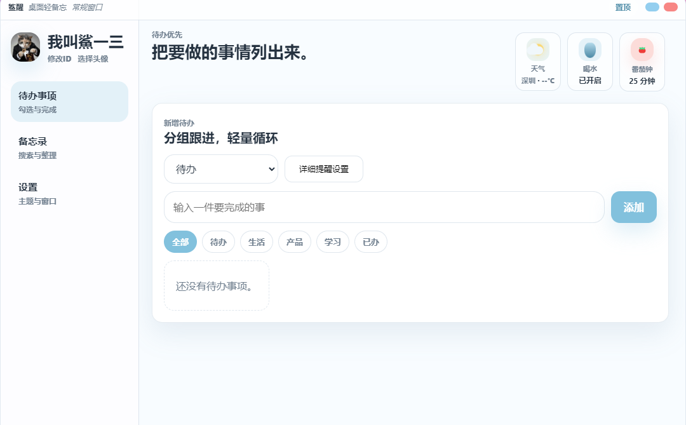

memo-first desktop app
鲨醒
把要做的事情，轻轻列出来。
一个 memo-first 的桌面备忘录工具。快速记录、轻量提醒、天气陪伴，让想法和待办不再散落。

Memo first
打开就能写
不用建项目，不用选分类，先把事情记下来。
输入一件要完成的事
最近备忘
把会议里的想法先放进来 下班前确认下载页文案Quiet support
提醒和天气，只在需要时出现
它们是轻量陪伴，不是第二个仪表盘。
喝水提醒
低打扰地提醒你补水，状态清楚，声音很轻。
天气查看
把当天环境信息放在手边，需要时看一眼就够。
Two modes
大窗口认真整理，小窗口随手记录
从完整首页到窄长窗口，鲨醒适应你当下的工作节奏。
Themes
换一种心情，也不打断记录
主题是氛围，不是负担。清爽、柔和，也可以有一点酷。
Desktop companion
安静待在桌面边缘
后台驻留、边缘吸附、自动收起。随时可叫出，不打扰当前工作。
Download
鲨醒 V1.1 已发布
这次更新让提醒更可靠、待办更贴心、更新更省心。现在就更新，体验更稳定的鲨醒。
01 🔔 系统通知
喝水提醒升级为系统级通知，后台也能收到提醒。
02 🧪 提醒测试
设置页新增喝水提醒测试按钮。
03 ⏰ 单独提醒
待办事项支持单独设置提醒时间。
04 📣 到点弹出
待办到点后可通过系统通知弹出。
05 🔄 检查更新
新增自动检查更新与手动检查更新。
06 📦 在线安装
支持在线下载、校验并安装新版本。
当前版本
1.1.0 stable
安装方式
下载便携包后，解压整个文件夹，再打开 Shaxing-Portable 文件夹里的 Shaxing.exe。
文件校验
SHA256: efac7cc00b173ae1cd20179f75bee2dcff478454c84615c6631a7bdbacf81843